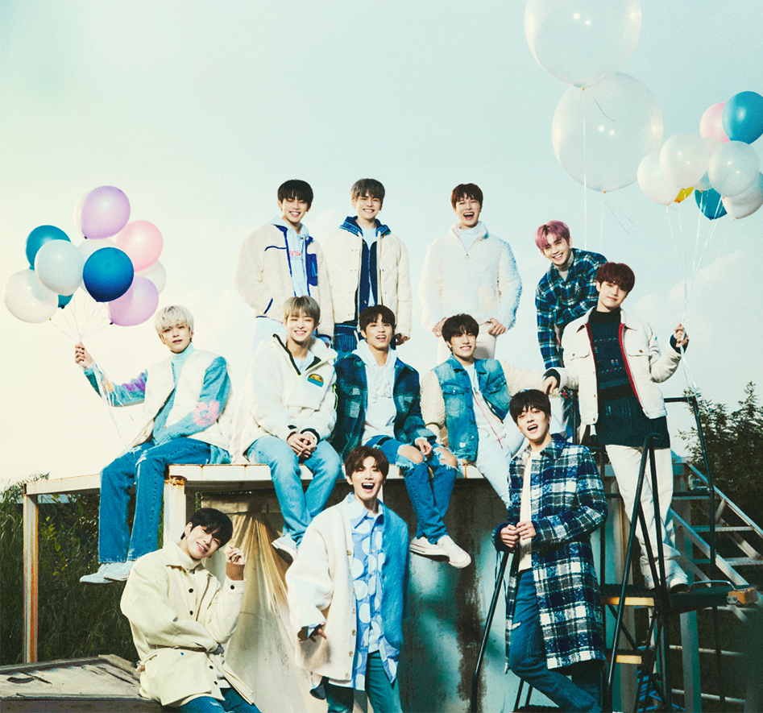

트레저는 2020년 8월 7일 데뷔한 YG엔터테인먼트 소속 12인조 아이돌 보이그룹이다.

서바이벌 프로그램 YG 보석함을 통해 결성되었다.
YG 보석함 방송 이후 7인으로 구성된 유닛 '트레저'와 6인으로 구성된 유닛 '매그넘'이 합쳐진 13인조 '트레저 13'으로 데뷔할 예정이었으나,
데뷔가 당초보다 연기되는 동안 12인조로 재편성되었고, 동시에 그룹명도 트레저로 변경되었다.